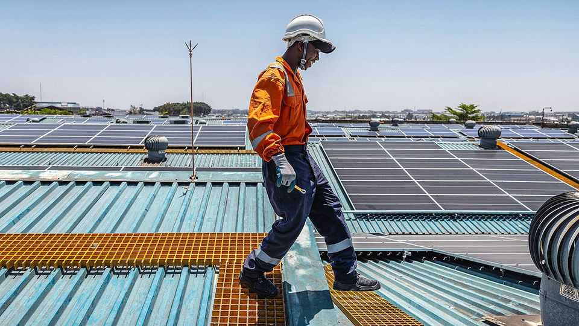
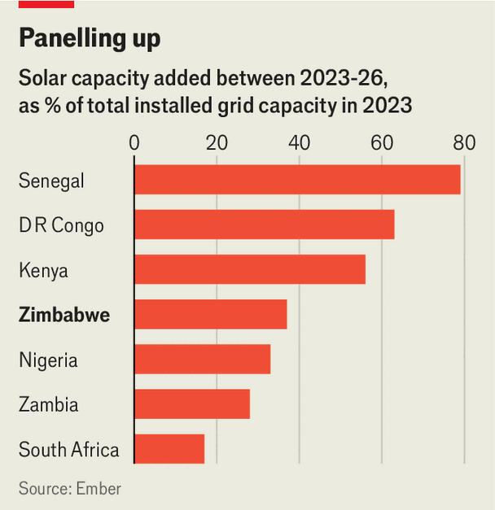

Africa’s solar revolution is vast and speedy
Zimbabwe shows that official statistics probably underestimate its scale

Nov 12th 2026
If at first you cannot find the new power project in an industrial area of Harare, Zimbabwe’s capital, try looking up. The Limpopo Way Power solar farm has no conventional site, just rows of panels across the rooftops of two tobacco warehouses, and an agreement to supply a factory. In Zimbabwe, as in much of Africa and Asia, the signs of an energy revolution are everywhere.
Assessing its true scale is still tricky, however. Few African governments publish timely data on solar installations. Those that do are probably underestimating their expansion. The best guess comes from two think-tanks, Ember and Africa Tech Futures Lab, using data on exports of Chinese solar panels to the continent. Assuming that three-quarters of those panels have been installed, and including imports from other countries, they reckon that Zimbabwe has added 948MW of solar power since the start of 2023, equivalent to a third of its previous grid capacity.

Africa will install a record 17GW of solar capacity in 2026, the researchers think, or about 100,000 panels a day (see chart). In 19 countries, installations have more than doubled since last year; in the Democratic Republic of Congo, they have risen six-fold. A megawatt of solar produces less power than a megawatt of hydro or coal (even in sunny countries, it gets dark). Still, the amount of extra electricity generated would roughly match the entire annual growth in demand. Imports of Chinese batteries are growing even faster.
Where do all the panels end up? At Centragrid, a 25MW solar farm outside Harare, an engineer warns visitors not to be alarmed as panels clank backwards to track the sun. Such utility-scale plants are more efficient than a panel on a house, but they account for only a quarter of the capacity that Africa is adding this year. The rest appears to be what is known as distributed solar, panels installed by households or, especially, by businesses exasperated with the rickety grid. In South Africa and Namibia about 80% of such installations are found in firms, not homes.
Zimbabwe is a prime example of this revolution. Mines, farms and tourist lodges are harvesting photons. In villages, sunlight powers water pumps. The UN is backing mini-grids. Most of the country’s power still comes from coal, which is also expanding, or from the Kariba dam, which cradles the world’s largest artificial lake. But even there, plans are afoot to float 500MW of panels on its waters.
Isaiah Nyakusendwa, who leads an association of renewable-energy firms, talks of a solar “explosion” that nobody planned from above. A decade ago, solar panels cost about a dollar a watt; now, retailers are quoting 20 cents or less. At the lower end of the market firms’ business practices are not always as clean as their energy. Some customers have had their fingers burnt as their systems have caught fire.
Finance is still hard to come by. In 2024 the UN and Old Mutual, a financial-services group, set up a renewable-energy fund, which has deployed just over $6m so far. A few retailers offer rent-to-buy schemes. But systems often draw on customers’ savings. Salesmen describe a surge in interest at the end of the tobacco harvest or when the diaspora comes home for Christmas, and a drop when school fees are due.
The solar industry has been “built off the back of power cuts”, says Joshua Smyth of Solar Energy Projects, which installed the rooftop farm at Limpopo Way. Last year a faulty generator forced the president, Emmerson Mnangagwa, to finish his state of the nation address in the dark. This year the utility has done better at keeping the lights on. But the tariff rises that are paying for a stronger grid give consumers another reason to abandon it.
The danger for utilities is that they get sucked into a “death spiral”: as big customers opt out of the grid, the costs get passed on to others, who follow them out of the door. In Pakistan, the most dramatic case, grid sales have dropped by 11% in three years. In South Africa, after years of blackouts, the utility is now grappling with a surplus. Zimbabwe’s state electricity company is trying to encourage private firms to sell solar power into the grid, and hopes demand will grow fast. Its officials strategise from a brick tower, redolent of a 20th-century citadel; solar shops cluster nearby, like rebels at the gates.
For now, though, Africa’s electricity systems are a bricolage, as is evident from a visit to an informal settlement on the outskirts of Harare. One resident, Mavis Masakara, sells meat from a fridge outside her modest bungalow. Three sets of cables snake through her living room, curling round the family portraits: one that connects to a petrol generator, another to the grid, and a third to a panel on the roof.■
Sign up to the Analysing Africa, a weekly newsletter that keeps you in the loop about the world’s youngest—and least understood—continent.